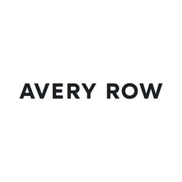

Trade Mark Journal No.2025/040 3 October 2025
UK00004265434 17 September 2025 (10,16,18,20,21,24,25,27,28,35)
Mark 1
AVERY ROW
Mark 2

- Class 10
- Pacifier clips; clips for pacifiers; pacifiers; baby dummies; dummies for babies; baby teething rings; baby bottles; parts, fittings and accessories for the aforesaid goods. .
- Class 16
- Stationery; gift bags; books; gift activity books; books for children; catalogues; advent calendars.
- Class 18
- Luggage and carrying bags; Bags; holdalls; rucksacks; shopping bags; handbags; tote bags; cloth bags; backpacks; baby changing bags; nappy bags; nappy wallets; diaper bags; nappy caddies; nappy caddy bags; changing back packs; pram organiser bags; wash bags; toiletry bags; pouches; parts, fittings and accessories for the aforesaid. .
- Class 20
- Furniture; containers, not of metal, for storage or transport; babies’ baskets; storage baskets [furniture]; storage boxes [furniture]; toy storage baskets and boxes; cushions; nursery cushions; pillows; nursing pillows; maternity pillows; reusable baby changing mats; travel baby changing mats; babies’ changing baskets; moses baskets; parts, fittings and accessories for the aforesaid goods. .
- Class 21
- Household or kitchen utensils and containers; laundry baskets; towel baskets; tissue box covers; glassware, porcelain and earthenware; parts, fittings and accessories for the aforesaid goods. .
- Class 24
- Textiles; substitutes for textiles; household linen; household linen for baby and children; bed linen; children’s bed linen; bathroom linens; muslins; baby muslins; cushion covers; textile liners for prams; pram liners; towels; baby towels; hooded baby towels; bath mittens made from towelling; bunting; bunting flags; sleeping bags; baby sleeping bags; pillow covers; duvet covers; sheets; fitted sheets; kitchen textiles; kitchen linens; table linens; table runners; napkins of textile; tea towels; parts, fittings and accessories for the aforesaid goods. .
- Class 25
- Clothing; footwear; headgear; clothing for children and babies; headwear for children and babies; footwear for children and babies; costumes for use in children’s dress up play; pyjamas; pyjamas for children and babies; parts, fittings and accessories for the aforesaid goods. .
- Class 27
- Floor coverings; play mats; play mats with incorporated activities; rugs; parts, fittings and accessories for the aforesaid. .
- Class 28
- Games; toys; playthings; soft toys; cuddly toys; baby toys; crib mobiles [toys]; Christmas decorations; Christmas tree decorations; Christmas stockings; parts, fittings and accessories for the aforesaid. .
- Class 35
- Retail services in relation to children and baby products, pacifier clips, clips for pacifiers, pacifiers, baby dummies, dummies for babies, baby teething rings, baby bottles, stationery, gift bags, books, gift activity books, books for children, catalogues, advent calendars, luggage and carrying bags, bags, holdalls, rucksacks, shopping bags, handbags, tote bags, cloth bags, backpacks, baby changing bags, nappy bags, nappy wallets, diaper bags, nappy caddies, nappy caddy bags, changing back packs, pram organiser bags, wash bags, toiletry bags, pouches, furniture, containers, not of metal, for storage or transport, babies’ baskets, storage baskets [furniture], storage boxes [furniture], toy storage baskets and boxes, cushions, nursery cushions, pillows, nursing pillows, maternity pillows, reusable baby changing mats, travel baby changing mats, babies’ changing baskets, moses baskets, household or kitchen utensils and containers, laundry baskets, towel baskets, tissue box covers, glassware, porcelain and earthenware, textiles, substitutes for textiles, household linen, household linen for baby and children, bed linen, children’s bed linen, bathroom linens, muslins, baby muslins, cushion covers, textile liners for prams, pram liners, towels, baby towels, hooded baby towels, bath mittens made from towelling, bunting, bunting flags, cushion covers, sleeping bags, baby sleeping bags, pillow covers, duvet covers, sheets, fitted sheets, kitchen linens, kitchen textiles, tea towels, napkins, table runners, table cloths, clothing, footwear, headgear, clothing for children and babies, headwear for children and babies, footwear for children and babies, costumes for use in children’s dress up play, pyjamas, pyjamas for children, floor coverings, play mats, play mats with incorporated activities, rugs, games, toys, playthings, soft toys, cuddly toys, baby toys, crib mobiles [toys], Christmas decorations, present sacks and Christmas stockings; online retail services in relation to children and baby products, pacifier clips, clips for pacifiers, pacifiers, baby dummies, dummies for babies, baby teething rings, baby bottles, stationery, gift bags, books, gift activity books, books for children, catalogues, advent calendars, luggage and carrying bags, bags, holdalls, rucksacks, shopping bags, handbags, tote bags, cloth bags, backpacks, baby changing bags, nappy bags, nappy wallets, diaper bags, nappy caddies, nappy caddy bags, changing back packs, pram organiser bags, wash bags, toiletry bags, pouches, furniture, containers, not of metal, for storage or transport, babies’ baskets, storage baskets [furniture], storage boxes [furniture], toy storage baskets and boxes, cushions, nursery cushions, pillows, nursing pillows, maternity pillows, reusable baby changing mats, travel baby changing mats, babies’ changing baskets, moses baskets, household or kitchen utensils and containers, laundry baskets, towel baskets, tissue box covers, glassware, porcelain and earthenware, textiles, substitutes for textiles, household linen, household linen for baby and children, bed linen, children’s bed linen, bathroom linens, muslins, baby muslins, cushion covers, textile liners for prams, pram liners, towels, baby towels, hooded baby towels, bath mittens made from towelling, bunting, bunting flags, cushion covers, sleeping bags, baby sleeping bags, pillow covers, duvet covers, sheets, fitted sheets, kitchen linens, kitchen textiles, tea towels, napkins, table runners, table cloths, clothing, footwear, headgear, clothing for children and babies, headwear for children and babies, footwear for children and babies, costumes for use in children’s dress up play, pyjamas, pyjamas for children, floor coverings, play mats, play mats with incorporated activities, rugs, games, toys, playthings, soft toys, cuddly toys, baby toys, crib mobiles [toys], Christmas decorations, present sacks and Christmas stockings; social media promotion. .
Avery Row Ltd
Representative: House Law Limited